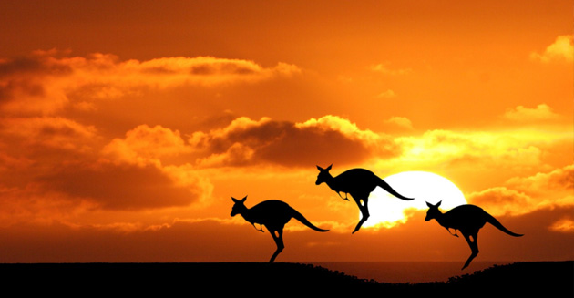
Welcome To Australia
Australia – the country is an enticing mix of many different ethnicities; many different geologic landforms; a mix between wonderfully modern, cultured cities and remote rural locales, etc.Australia is not the biggest country in the world. But it is hugewith incomprehensible vast open spaces in the center of the continent that are virtually unpopulated.
10 Days/9 Nights Itinerary
Day 1 : Arrive in Sydney
Arrive in Sydney ,one of the most beautiful cities in the world. Enjoy the stunning harbour views, golden beaches, exciting shopping, dining and a fabulous nightlife.
|
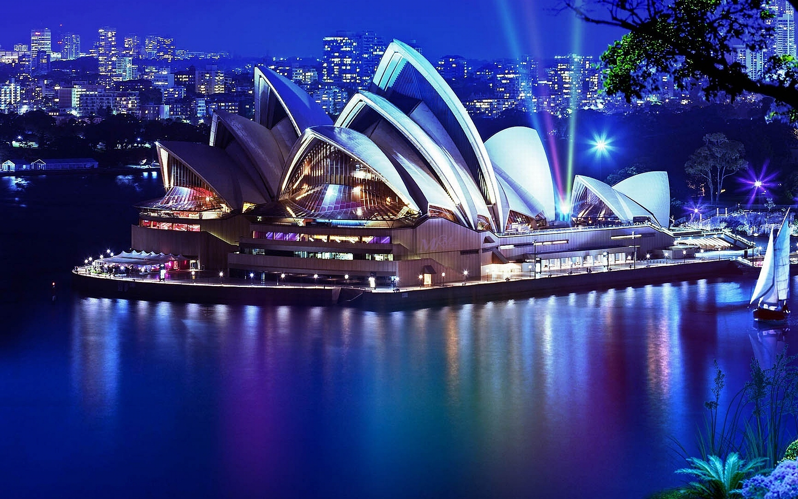 |
| 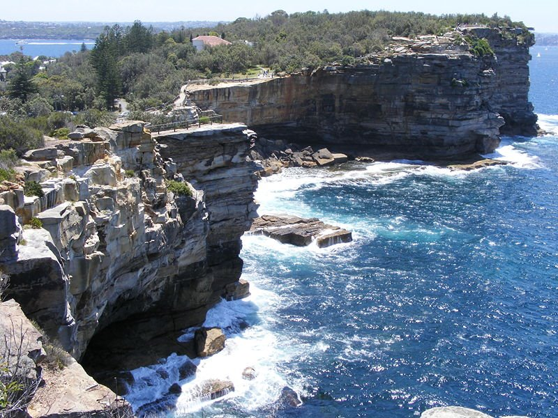 |
Day 2 : Stay and explore Sydney
Breakfast at your hotel
Spend the day exploring Sydney - the Queen Victoria Building, Darling Harbour, the Opera House,
The Rocks and some of the lovely harbour suburbs such as Potts Point, the ritzy Double Bay and Watsons Bay. |
Day 3 : Seaworld
After Breakfast. Proceed to Seaworld – A marine mammal park, oceanarium, and theme park located on the Gold Coast, Queensland, Australia.
It includes rides, animal exhibits and other attractions, and promotes conservation through education and through the rescue and rehabilitation of sick, injured or orphaned wildlife.Overnight at your Hotel |
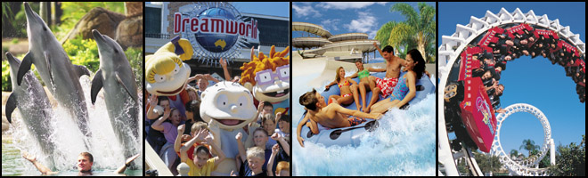 |
| 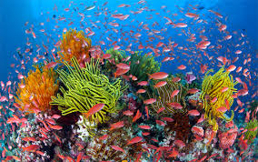 |
Day 4 : Stay and explore the Great Barrier Reef
Take a day trip onto the Great Barrier Reef - you'll love snorkelling and diving among the spectacular coral formations.
We recommend Calypso Reef Cruises for snorkelling and scuba diving the Great Barrier Reef.
The reef trips are suitable for all ages and provide a unique reef experience for all guests (due to small guest numbers).
|
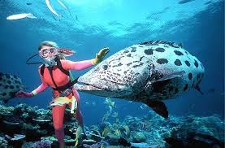 |
| 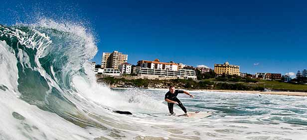 |
Day 5 : Bondi Beach
After Breakfast. Go for a swim at Bondi Beach. Rent a surfboard or take a surfing class for beginners.
Walk through Chinatown and have dinner. Night in Sydney. |
Day 6 : Alice Springs or Ayers Rock
Breakfast at your hotel
Experience the real outback Australia - nature has an overwhelming power here. The skyscrapers are made of rock, not steel, and one of the best shows in town is the spectacular million-star night-time display.
This arid environment is home to a large population of unique animals, birds and reptiles.
Wallabies, dingoes, emus, tiny geckos and huge eagles are just some of the long-established locals you’re likely to encounter. |
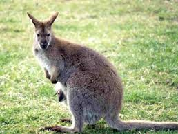 |
| 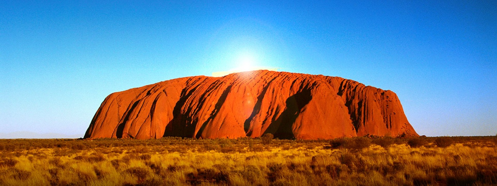 |
Day 7 : Stay and explore Uluru & The Olgas
Join a day tour to Uluru and the Olgas today.
Learn about the history, geology, flora and fauna and take the opportunity to photograph the colours and formations of this stunning National Park. |
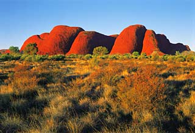 |
Day 8 : Domestic flight to Melbourne
Arrive in Melbourne and stay for two nights. Australia’s second largest city and capital of Victoria, Melbourne is contemporary, sophisticated and international in style with an abundance of good food and wine and great shopping.
Melbourne is considered the fashion capital of Australia. |
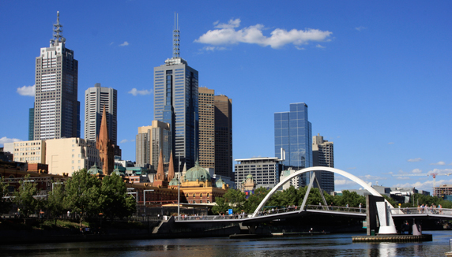 |
| 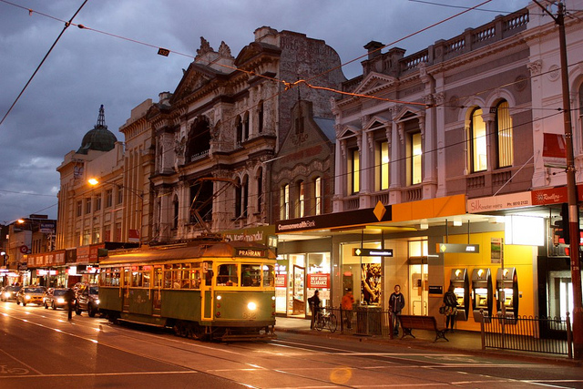 |
Day 9 : Stay and explore Melbourne
Breakfast at your hotel
Explore Melbourne's stunning architecture, great dining, art galleries, parks, gardens and shops.
The Victoria Market is well worth a visit. The city centre is attractive and easy to negotiate.
The shopping in Bridge and Chapel Street is for those in need of serious retail therapy. |
Day 10 : Depart from Melbourne
Depart for home today or stay on in Australia for a few extra days if time allows.
Meals on Tour :
Day 1 : Dinner
Day 2 - 9 : Breakfast, Lunch and Dinner
Day 10 : Breakfast
Extra Topping :
1) Tea / Coffee at Darling Harbor or Paddy's Market.
2) Tea / Coffee/ Ice Cream at Great Barrier Reef.
3) Ice Cream at Bondi Beach.
4) Ice cream at Great Ocean Road, Melbourne.
Our Speciality :
Caring Tour Manager throughout the tour.
Reporting & Dropping for Joining & Leaving :
Day 1 : At the Airport/Hotel/Sight seeing place (Please re-confirm with our tour consultant 8 days prior to the tour).
Day 10 : Tour concludes at the Hotel/ Airport- as per scheduled group flight.
! EARLY BIRDS GET DISCOUNTS !
TOUR PACKAGE : Rs.1,70,000 **Terms and Conditions Apply